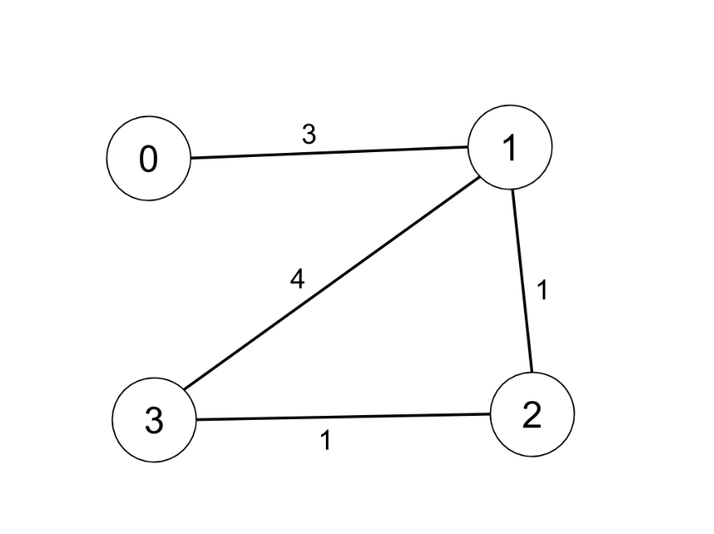
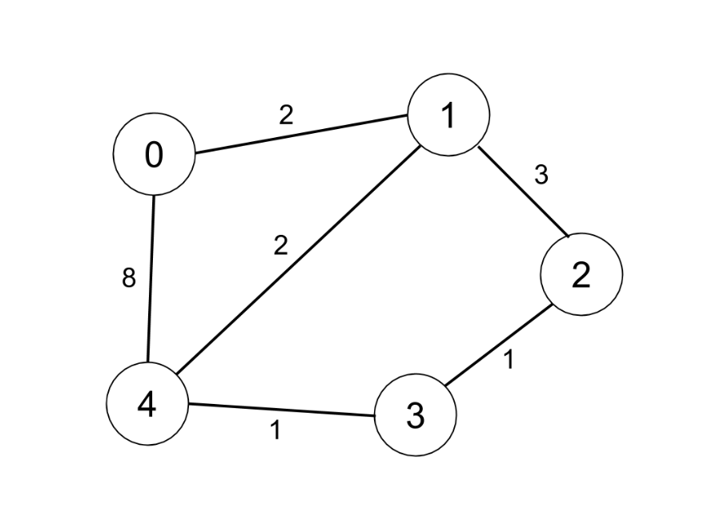

| Category | Difficulty | Likes | Dislikes |
|---|---|---|---|
| Algorithms | Medium | 3539 | 153 |
google | amazon | microsoft | facebook | expedia | uber
There are n cities numbered from 0 to n-1. Given the array edges where edges[i] = [fromi, toi, weighti] represents a bidirectional and weighted edge between cities fromi and toi, and given the integer distanceThreshold.
Return the city with the smallest number of cities that are reachable through some path and whose distance is at most distanceThreshold, If there are multiple such cities, return the city with the greatest number.
Notice that the distance of a path connecting cities i and j is equal to the sum of the edges' weights along that path.
Example 1:

Input: n = 4, edges = [[0,1,3],[1,2,1],[1,3,4],[2,3,1]], distanceThreshold = 4
Output: 3
Explanation: The figure above describes the graph.
The neighboring cities at a distanceThreshold = 4 for each city are:
City 0 -> [City 1, City 2]
City 1 -> [City 0, City 2, City 3]
City 2 -> [City 0, City 1, City 3]
City 3 -> [City 1, City 2]
Cities 0 and 3 have 2 neighboring cities at a distanceThreshold = 4, but we have to return city 3 since it has the greatest number.Example 2:

Input: n = 5, edges = [[0,1,2],[0,4,8],[1,2,3],[1,4,2],[2,3,1],[3,4,1]], distanceThreshold = 2
Output: 0
Explanation: The figure above describes the graph.
The neighboring cities at a distanceThreshold = 2 for each city are:
City 0 -> [City 1]
City 1 -> [City 0, City 4]
City 2 -> [City 3, City 4]
City 3 -> [City 2, City 4]
City 4 -> [City 1, City 2, City 3]
The city 0 has 1 neighboring city at a distanceThreshold = 2.
Constraints:
2 <= n <= 1001 <= edges.length <= n * (n - 1) / 2edges[i].length == 30 <= fromi < toi < n1 <= weighti, distanceThreshold <= 10^4(fromi, toi) are distinct.